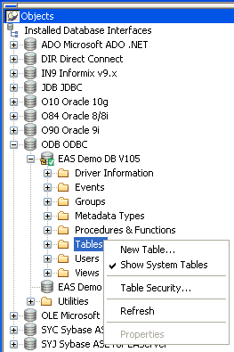
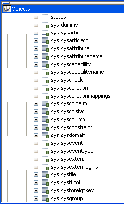

PowerBuilder uses a collection of five system tables (formerly known as the Powersoft repository) to store extended attribute information (such as display formats, validation rules, and font information) about tables and columns in your database. You can also define extended attributes when you create or modify a table in PowerBuilder.
This section tells you how to:
By default, PowerBuilder creates the extended attribute system tables the first time you connect to a database.
To ensure that PowerBuilder creates the extended attribute system tables with the proper access rights to make them available to all users, the first person to connect to the database with PowerBuilder must log in with the proper authority.
 To ensure proper creation of the PowerBuilder extended
attribute system tables:
To ensure proper creation of the PowerBuilder extended
attribute system tables:
Make sure the first person to connect to the database with PowerBuilder has sufficient authority to create tables and grant permissions to PUBLIC.
This means that the first person to connect to the database should log in as the database owner, database administrator, system user, system administrator, or system owner, as specified by your DBMS.
 Creating the extended attribute system tables when
using the DirectConnect interface When you are using the DirectConnect interface, the PowerBuilder extended attribute
system tables are not created automatically
the first time you connect to a database. You must run the DB2SYSPB.SQL script
to create the system tables, as described in "Using the DB2SYSPB.SQL
script".
Creating the extended attribute system tables when
using the DirectConnect interface When you are using the DirectConnect interface, the PowerBuilder extended attribute
system tables are not created automatically
the first time you connect to a database. You must run the DB2SYSPB.SQL script
to create the system tables, as described in "Using the DB2SYSPB.SQL
script".
PowerBuilder updates the extended attribute system tables automatically whenever you change the information for a table or column. The PowerBuilder extended attribute system tables are different from the system tables provided by your DBMS.
You can display and open PowerBuilder extended attribute system tables in the Database painter just like other tables.
 To display the PowerBuilder extended attribute system
tables:
To display the PowerBuilder extended attribute system
tables:
In the Database painter, highlight Tables in the list of database objects for the active connection and select Show System Tables from the pop-up menu.

The PowerBuilder extended attribute system tables and DBMS system tables display in the tables list, as follows:

Display the contents of a PowerBuilder system table in the Object Layout, Object Details, and/or Columns views.
For instructions, see the User's Guide .
 Do not edit the extended attribute system tables Do not change the values in the PowerBuilder extended attribute
system tables.
Do not edit the extended attribute system tables Do not change the values in the PowerBuilder extended attribute
system tables.
PowerBuilder stores five types of extended attribute information in the system tables as described in Table 7-1.
For more about the PowerBuilder system tables, see the Appendix in the User's Guide .
 Prefixes in system table names For some databases, PowerBuilder precedes the name of the system
table with a default DBMS-specific prefix. For example, the names
of PowerBuilder system tables have the prefix DBO in
a SQL Server database (such
as DBO.pbcatcol), or SYSTEM in
an ORACLE database (such as SYSTEM.pbcatfmt).
Prefixes in system table names For some databases, PowerBuilder precedes the name of the system
table with a default DBMS-specific prefix. For example, the names
of PowerBuilder system tables have the prefix DBO in
a SQL Server database (such
as DBO.pbcatcol), or SYSTEM in
an ORACLE database (such as SYSTEM.pbcatfmt).
To control access to the PowerBuilder system tables at your site, you can specify that PowerBuilder not create or update the system tables or that the system tables be accessible only to certain users or groups.
You can control system table access by doing any of the following:
 To control system table access by setting Use
Extended Attributes or Read Only:
To control system table access by setting Use
Extended Attributes or Read Only:
Select Design>Options from the menu bar.
The Database Preferences dialog box displays. If necessary, click the General tab to display the General property page.

Set values for Use Extended Attributes or Read Only as follows:
PowerBuilder saves your preference settings in the registry.
If your DBMS supports SQL GRANT and REVOKE statements, you can control access to the PowerBuilder system tables. The default authorization for each repository table is:
GRANT SELECT, UPDATE, INSERT, DELETE ON table TO PUBLIC
After the system tables are created, you can (for example) control access to them by granting SELECT authority to end users and SELECT, UPDATE, INSERT, and DELETE authority to developers. This technique offers security and flexibility that is enforced by the DBMS itself.